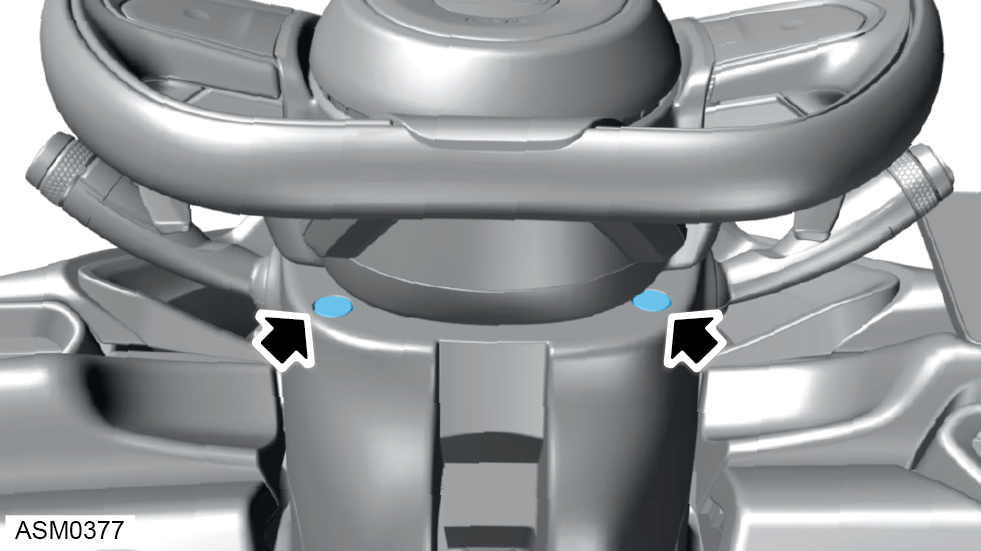
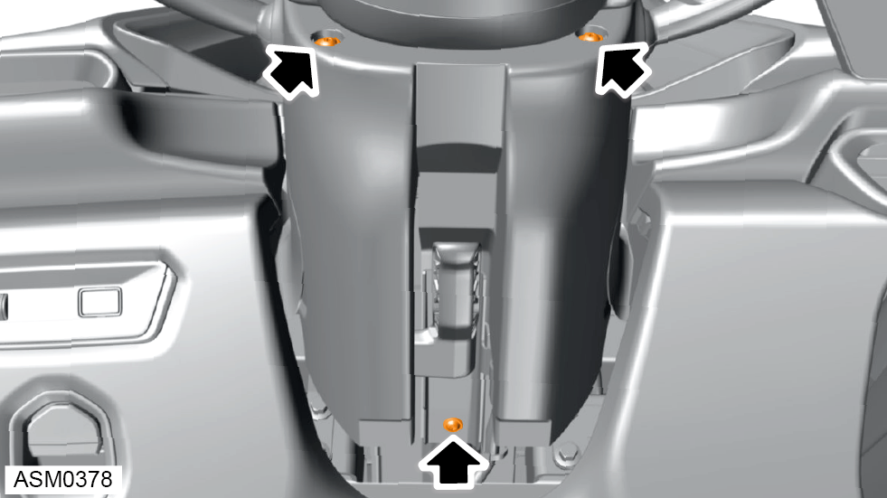
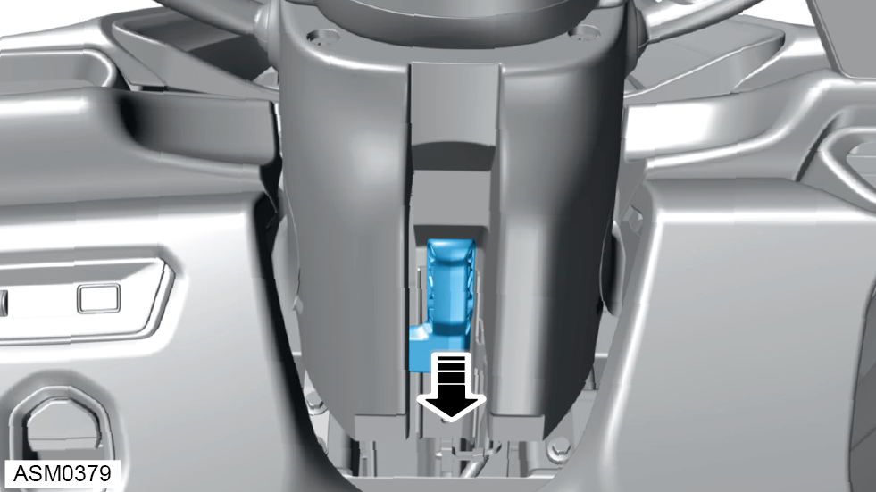
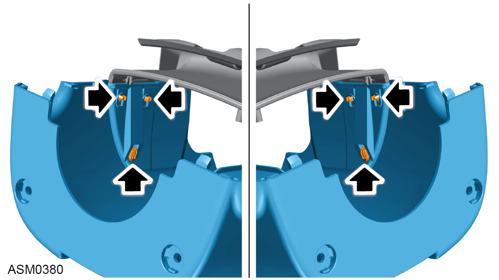

Steering Column Shroud - Lower
Print
Operation Code: 14.05.30-02
Removal
- Remove steering column shroud - upper. Refer to procedure.

- Remove trim covers (x2) from lower steering column shroud.

- Remove 4x16 self tapping screws (x3) securing the lower steering column shroud to steering column.

- Lower adjustable steering column lever.
- Disengage lower steering column shroud from steering column gaiter.

- Refer to illustration for trim clip type and location.
- Remove lower steering column shroud from vehicle.
Installation
- Installation is the reverse of removal procedure.